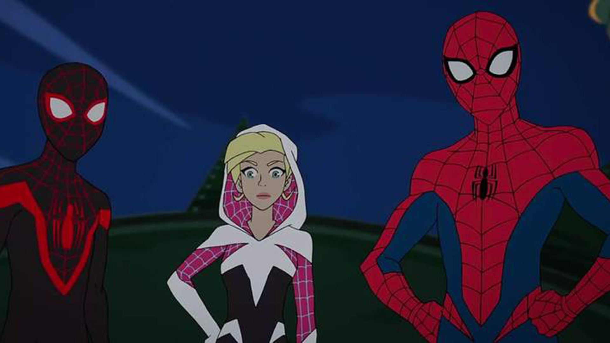
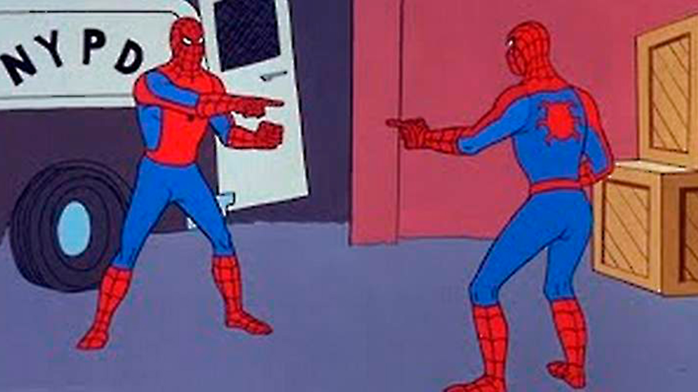
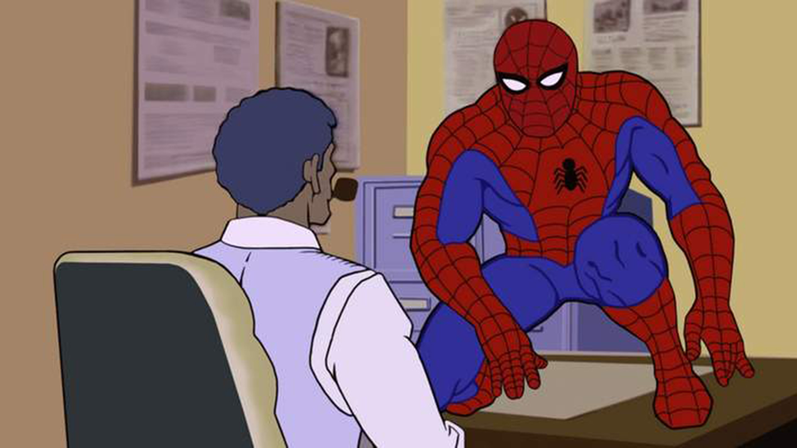
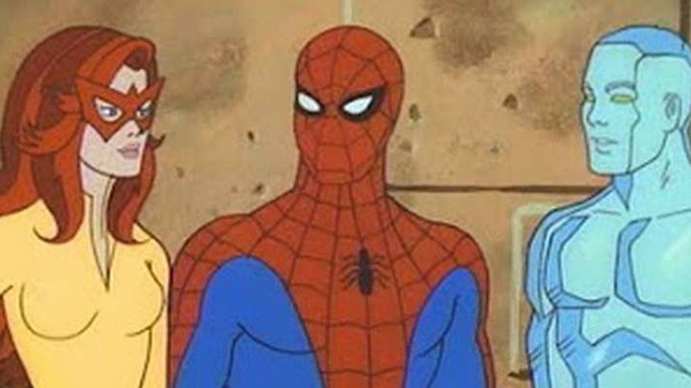
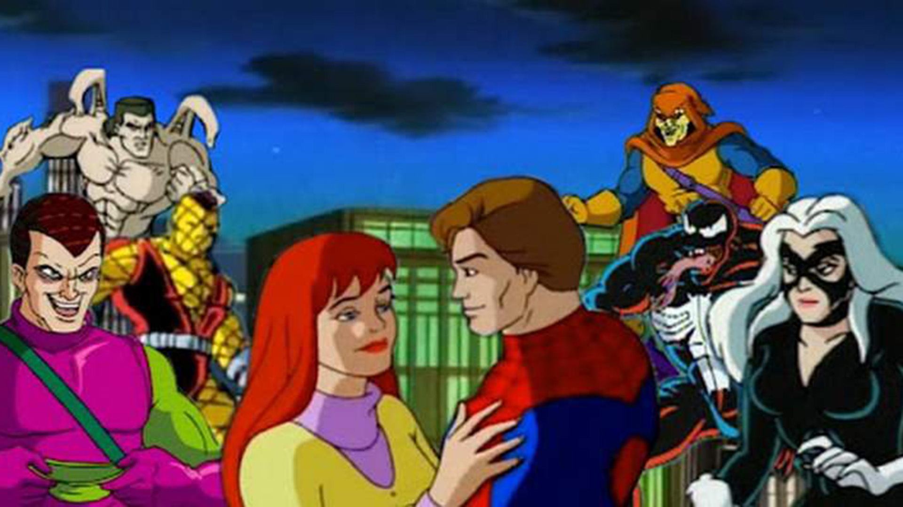
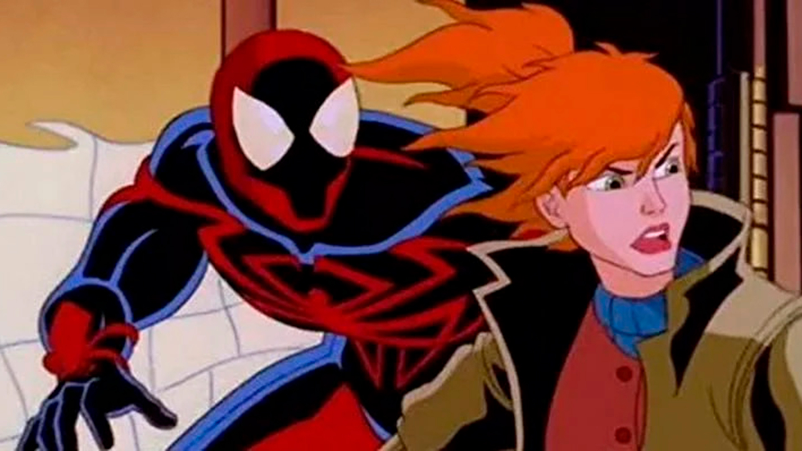
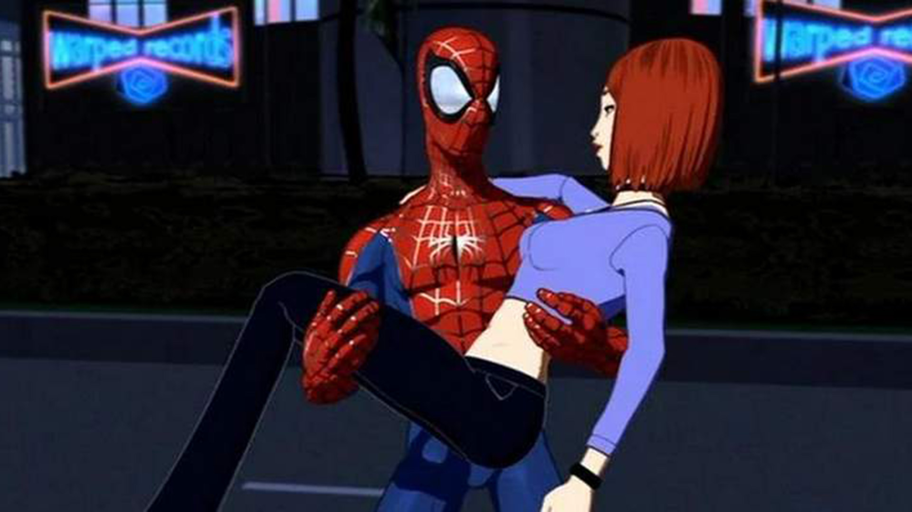
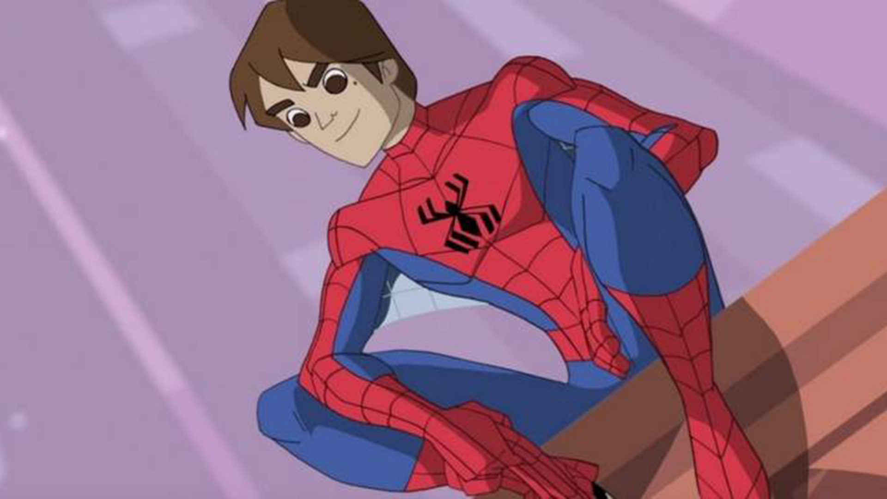
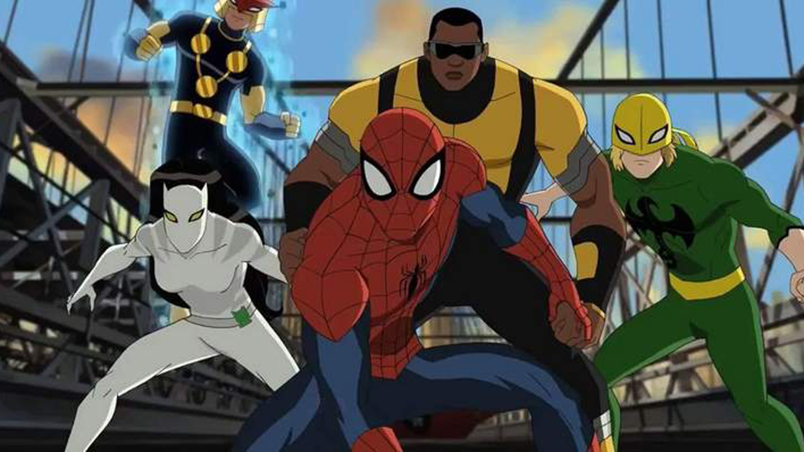

Homem-aranha - 1967
A primeira animação do Homem-Aranha, de 1967, é uma das mais divertidas devido a sua grande galhofa sessentista. Inclusive, é nesta versão que surgiram os memes mais reconhecíveis do herói. Até mesmo sua música tema deixou uma forte impressão nos fãs das antigas, ressurgindo como uma referência até nos filmes mais recentes.
As técnicas de animação e o roteiro podem não ter envelhecido muito bem, mas esta versão ainda tem o seu valor graças ao legado colossal que deixou na cultura pop. Sem ela, provavelmente não teríamos sequer outras animações ou filmes live action para contar história. É o lugar perfeito para começar a entender o motivo do sucesso do teioso.

Homem-aranha - 1981
Em 1981, recebemos uma nova versão do amigão da vizinhança, com um traço mais marcante em sua animação. Mas por ter sobrevivido por apenas 22 episódios, mesmo entre fãs, esta temporada não é muito lembrada.
A escrita ainda é um problema para os dias de hoje, com episódios tão básicos quanto He-Man e os Mestres do Universo ou qualquer desenho popular da época. Afinal, o mais importante era a ação. Ainda assim, foi a animação que introduziu a ideia de trazer heróis convidados de outros cantos da Marvel, como o Capitão América e Namor, o que se tornaria um grande sucesso em versões posteriores.

Homem-Aranha e seus Incríveis Amigos - 1981
Exibida originalmente na Fox Kids, no Brasil, Homem-Aranha e seus Incríveis Amigos foi um sucesso na época. Tudo porque a dinâmica do teioso com o Homem de Gelo, um mutante popular dos X-Men, e a Flama, criada especificamente para a série, funcionava muito bem.
O trio enfrentava vilões conhecidos do Homem-Aranha e de outros núcleos dos quadrinhos da Marvel. A participação de outros heróis, como os X-Men, também se tornou cada vez mais comum. Mas ao ser relançada no exterior, a animação enfrentou polêmica por apresentar episódios com conteúdo ofensivo contra minorias raciais.

Homem-Aranha - 1994
O humor foi deixado de lado por um enfoque maior em drama em Homem-Aranha (1994). A luta de Peter Parker para manter seu relacionamento com Mary Jane e seu trabalho no Clarim Diário ganharam um destaque tão grande quanto os embates contra super-vilões. De modo geral, isto elevou a coesão e a seriedade da produção, que conseguiu adaptar de perto diversos elementos dos quadrinhos sem parecer caricato.
Também foi responsável por introduzir toda uma geração aos vilões mais icônicos do amigão da vizinhança e aliados importantes que marcaram a carreira do herói, como Madame Teia e a Gata Negra. Devido ao seu tamanho sucesso, a série foi renovada por cinco temporadas até enfim ser cancelada.

Homem-Aranha: Ação sem Limites - 1999
De certo modo, esta é uma sequência de Homem-Aranha (1994). Na trama, a expedição do filho astronauta de J. J. Jameson para a Contra-Terra acaba sofrendo com interferência de Venom e Carnificina, motivando Peter Parker a ajudar. Mas o teioso acaba preso em um universo cyberpunk que não agradou muito o público.
A questão é que Homem-Aranha: Ação sem Limites foi uma tentativa de surfar na onda da popularidade de Batman Beyond que falhou em replicar a empolgação de um mundo tecnológico e futurista com o grande herói da Marvel. Acabou sendo cancelado após uma curta temporada de treze episódios que muitos acreditam que teria sido melhor com o Homem-Aranha 2099.

Homem-Aranha: A Série - 2003
Mais um fiasco da carreira do teioso, Homem-Aranha: A Série tentou replicar a aclamação que o herói havia conquistado no cinema, sem muito sucesso. Tentar se promover como algo mais maduro, quando esta não era a realidade, foi apenas a primeira de uma sequência de escolhas ruins que afundou o programa de vez.
A animação tridimensional não foi muito bem recebida, em grande parte, devido a qualidade da tecnologia na época. Era estranho, para dizer o mínimo, e hoje em dia é absolutamente cringe. Nem um roteiro decente ou a atuação de Neil Patrick Harrison, na dublagem original, conseguiram salvar esta série do cancelamento prematuro.

O Espetacular Homem-Aranha - 2008
Como uma fênix, o teioso ressurgiu das cinzas em 2008 com O Espetacular Homem-Aranha. Esta nova animação veio da mente brilhante dos mesmos criadores de Justiça Jovem, o grande sucesso da DC. E mesmo com o traço mais despojado, é palpável o comprometimento em contar boas histórias.
O roteiro encontrou uma maneira de incorporar os principais arcos dos quadrinhos da época em seu enredo de forma orgânica e inovadora. Pena que esta foi mais uma série que não durou muito, como costuma ser com o Homem-Aranha. Pelo menos desta vez, o cancelamento após a segunda temporada veio por questões de direitos autorais.

Ultimate Spider-Man - 2012
Ultimate Spider-Man, apesar da controversa decisão de não estrelar Miles Morales, foi um capítulo interessante na história de Peter Parker. Este programa apresenta uma versão de Peter mais ligada com a S.H.I.E.L.D., trabalhando lado a lado com heróis nem tão conhecidos assim, como o Nova e a Tigresa Branca.
Fortemente influenciada pelo sucesso dos filmes do MCU, esta série flerta com um humor mais presente, sem medo de quebrar a quarta parede. Se de um lado isto tornou o desenho mais popular entre as crianças, atrapalhou o desenvolvimento do roteiro.
Marvel's Spider-Man - 2017
A animação mais recente do herói, Marvel’s Spider-Man, veio para acompanhar os filmes de Tom Holland, mas acabou sendo moldada ainda mais por outros sucessos recentes do personagem: o filme animado Homem-Aranha no Multiverso e o jogo de PlayStation 4 de mesmo nome.
Indo além dos dramas de Peter Parker, este desenho explora outros membros do Time-Aranha, como Miles Morales e a Aranha-Fantasma, apelando para um público mais amplo. A série ainda tem uma terceira temporada focada nos simbiontes, batizada de Maximum Venom.


![Nicolas Hammond, visto aqui em uma foto promocional de 'The Amazing Spider-man', aparecerá
na New England Megafest Comic-Con neste fim de semana em Framingham. [foto enviada] Telegrama
e gazeta](media/sipideman1977_2.jpg)